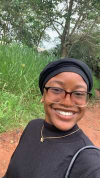

Angel Chizaram | WDD 130

Hello! My name is Angel Chizaram and I am from Imo, Nigeria. I love to read and sometimes crochet. This site is where I would share my progress in my class projects. I am excited to finally learn how to blend clean design with useful codes, by marrying the visual side of web design with the technical skills needed to make websites run beautifully. I love to experiment with layouts, typography, and interactive components to craft digital experiences that are interesting and easy to navigate. To me, this is not just a class assignment, but the beginning of my portfolio. I hope my viewers like browsing my work; hopefully and with a lot of dedication, I will continue to develop and grow what I share here.